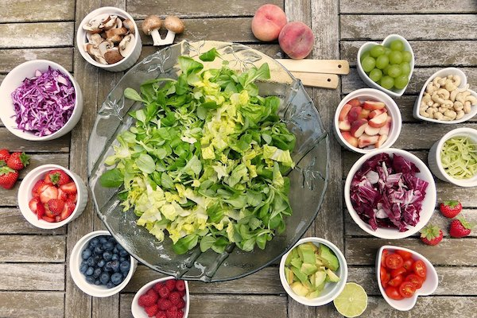

Connecting-the-dots
구독자 208명
-
샐러드의 모든 것! 일주일동안 코끼리만큼 샐러드를 먹어도 살이 빠질까? 인간 코끼리 조회수 6.7만회 · 2주 전
-
[ASMR] 몽환적인 밤바다 소리, 잔잔한 파도 소리 치유하는 소리 조회수 148만회 · 1년 전
-
 할머니만 오매불망 기다리는 까망이들 할매는 밭일중 조회수 62회 · 3개월 전
할머니만 오매불망 기다리는 까망이들 할매는 밭일중 조회수 62회 · 3개월 전